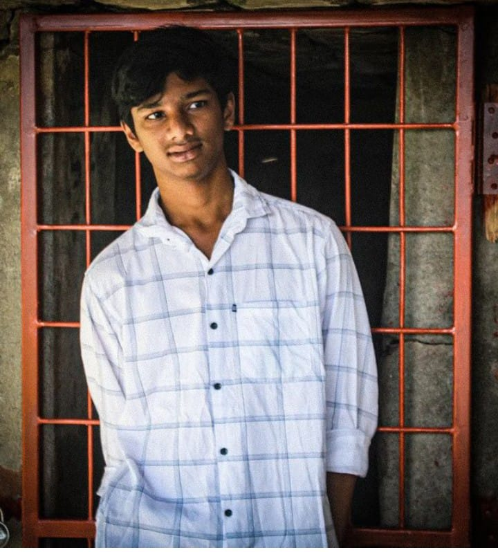

S.Venkata Gopi Chand

Summary
"Motivated and ambitious second-year B.Tech student at IIIT Dharwad, specializing in computer science and web development.
Proficient in modern programming languages, with hands-on experience in building projects that demonstrate strong problem-solving
abilities and a passion for backend and frontend development. A fast learner, committed to continuous improvement and excellence
in both academic and professional pursuits."
Education
| Course |
Institution |
Year of Passing |
Percentage |
| B.Tech |
Indian Institute of technology , Palakkad |
2026 |
85% |
| Higher Secondary Education Class 12 |
ABC Senior Secondary School, New Delhi |
93% |
2022 |
| Secondary Education Class 10 |
XYZ Public School, Bangalore |
96% |
2020 |
Skills
Technical Skills
- Programming Languages:
C++, Java, Python, JavaScript, SQL
- Web Development:
HTML, CSS, JavaScript, React, Node.js, RESTful APIs
- Database Management:
MySQL, MongoDB, PostgreSQL
- Data Structures & Algorithms:
- Object-Oriented Programming (OOP):
Experience with encapsulation, inheritance, and polymorphism
- Machine Learning (Optional for advanced students):
TensorFlow, scikit-learn, data pre-processing, model building
Soft Skills
- Problem Solving and Critical Thinking
- Team Collaboration and Communication
- Time Management
- Analytical Skills
Hobbies
Contact